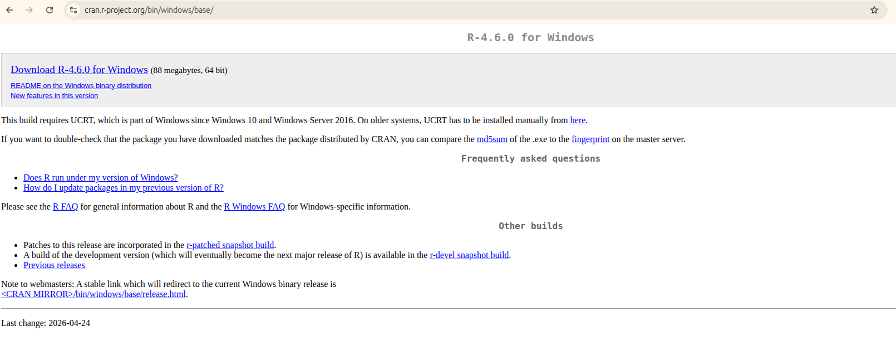
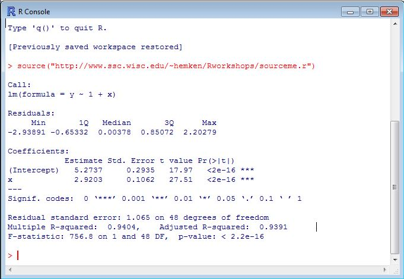
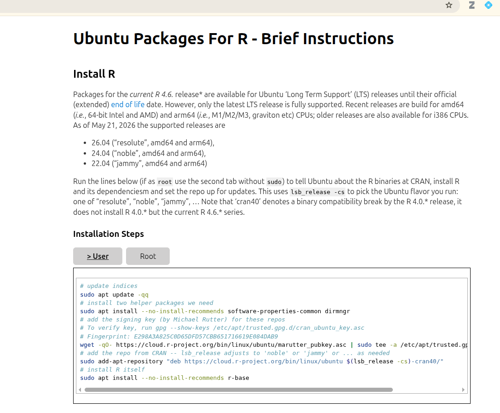
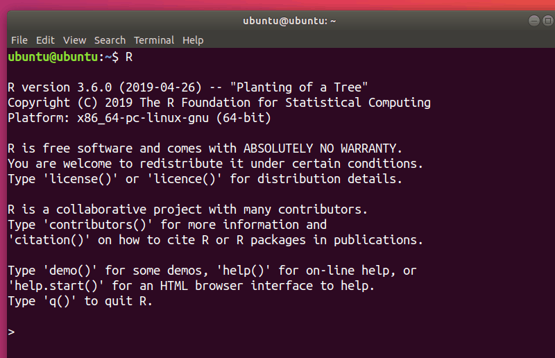
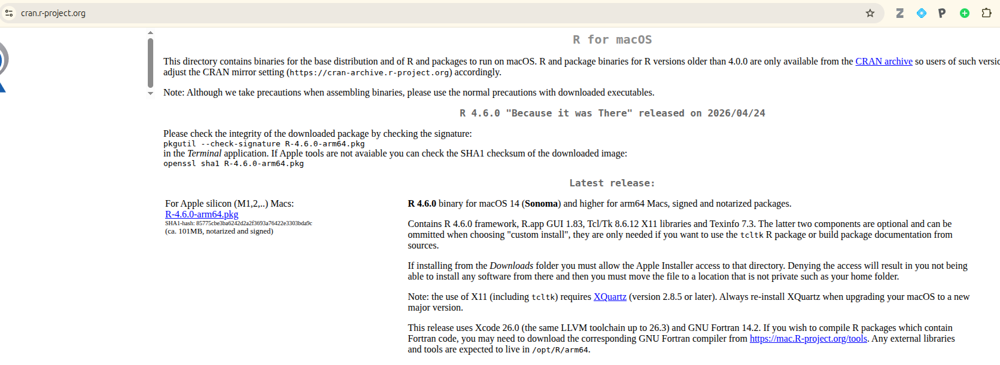
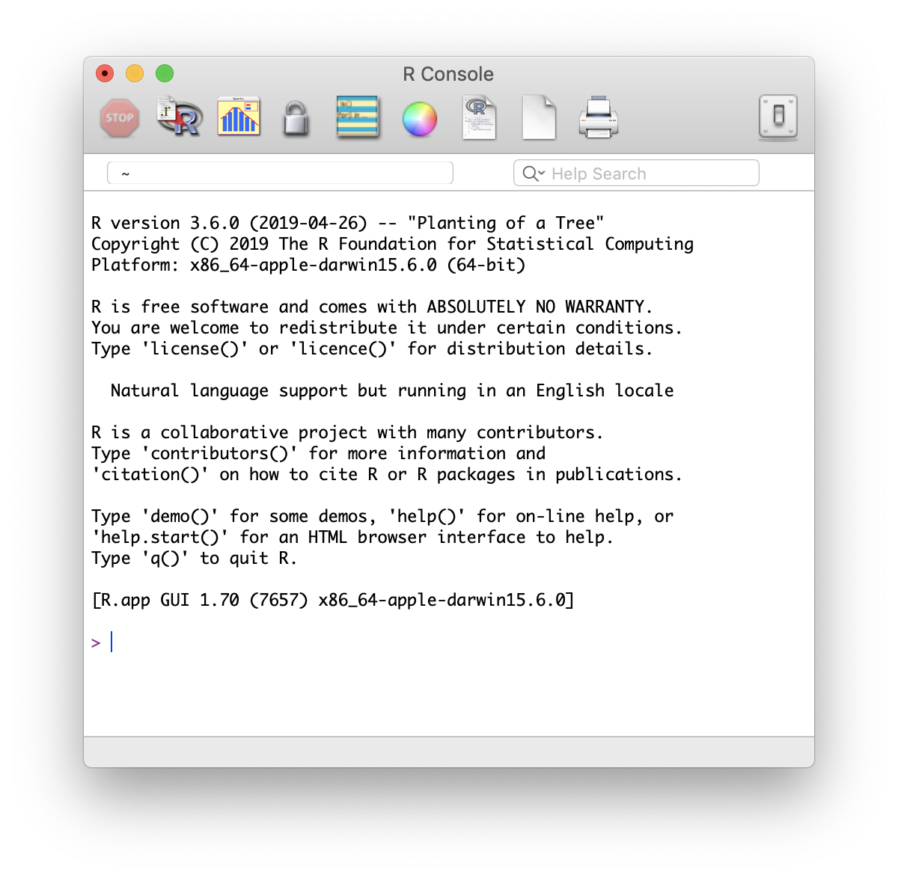
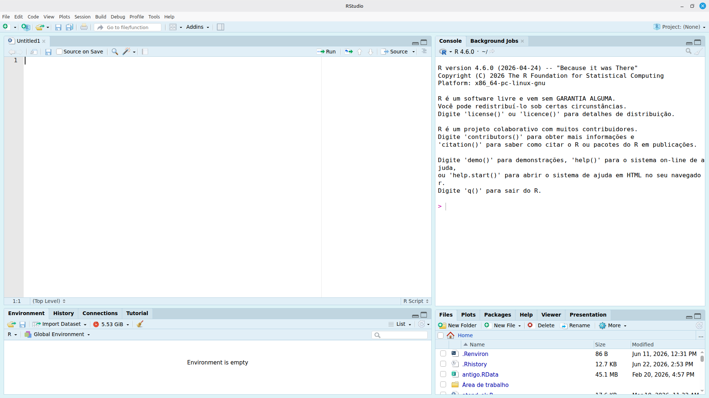

6 Introdução ao R
O R é uma linguagem de programação gratuita e de código aberto voltada para análise estatística, visualização de dados e computação científica. É amplamente utilizado em epidemiologia, saúde pública e ciências ambientais, sendo uma ferramenta essencial para quem trabalha com dados de saúde e clima.
O RStudio é um ambiente de desenvolvimento integrado (IDE) que facilita o uso do R, oferecendo editor de código, console, visualização de gráficos e gerenciamento de projetos em uma única interface.
⚠️ Importante: instale primeiro o R e depois o RStudio. O RStudio depende do R para funcionar — sem o R instalado, o RStudio não abrirá corretamente.
6.1 Instalação no Windows
6.2 1. Instalar o R
- Acesse https://cran.r-project.org/
- Clique em “Download R for Windows” → “base”
- Baixe e execute o instalador (ex.:
R-4.6.0-win.exe) - Siga as instruções padrão do instalador

Após a instalação, você pode abrir o R Console diretamente — ele terá a seguinte aparência:

💡 Dica: o R Console básico (Rgui) já funciona, mas é muito limitado. Na prática, usaremos sempre o RStudio, que instalamos a seguir.
6.3 2. Instalar o Rtools (recomendado)
O Rtools é necessário para compilar pacotes a partir do código-fonte no Windows. Muitos pacotes de análise espacial e dados ambientais exigem o Rtools.
- Acesse https://cran.r-project.org/bin/windows/Rtools/
- Baixe a versão compatível com sua versão do R (ex.: Rtools44 para R 4.4.x, Rtools46 para R 4.6.x)
- Execute o instalador e mantenha as opções padrão
- Após instalar, abra o R e execute:
# Verificar se o Rtools foi reconhecido
install.packages("pkgbuild")
pkgbuild::has_build_tools(debug = TRUE)6.4 3. Instalar o RStudio
- Acesse https://posit.co/download/rstudio-desktop/
- Baixe o instalador para Windows e execute
- Siga as instruções padrão
6.5 Instalação no Linux (Ubuntu/Linux Mint)
6.5.1 1. Instalar dependências do sistema
Antes de instalar o R, garanta que as bibliotecas necessárias estejam presentes:
sudo apt update
sudo apt install -y \
software-properties-common \
dirmngr \
gnupg \
apt-transport-https \
ca-certificates \
curl \
build-essential \
libcurl4-openssl-dev \
libssl-dev \
libxml2-dev \
libfontconfig1-dev \
libharfbuzz-dev \
libfribidi-dev \
libfreetype6-dev \
libpng-dev \
libtiff5-dev \
libjpeg-dev \
libgdal-dev \
libgeos-dev \
libproj-dev6.6 2. Instalar o R
O CRAN oferece instruções específicas para Ubuntu e distribuições derivadas (como o Linux Mint):

# Adicionar repositório CRAN
sudo add-apt-repository "deb https://cloud.r-project.org/bin/linux/ubuntu $(lsb_release -cs)-cran40/"
sudo apt-key adv --keyserver keyserver.ubuntu.com --recv-keys E298A3A825C0D65DFD57CBB651716619E084DAB9
sudo apt update
sudo apt install -y r-base r-base-dev⚠️ Linux Mint: o comando $(lsb_release -cs) pode retornar o codinome do Mint (ex.: wilma) em vez do Ubuntu base (ex.: noble). Se o repositório não for encontrado, substitua manualmente pelo codinome Ubuntu correspondente. Consulte a tabela de equivalência.
Após a instalação, você pode abrir o R diretamente no terminal digitando R:

💡 Dica: assim como no Windows, o R no terminal é funcional mas limitado. Usaremos o RStudio no dia a dia.
6.7 3. Instalar o RStudio
- Acesse https://posit.co/download/rstudio-desktop/
- Baixe o pacote
.deb(compatível com Ubuntu e Linux Mint) - Instale via terminal:
sudo dpkg -i rstudio-*.deb
sudo apt --fix-broken install # corrige dependências, se necessário6.8 Instalação no macOS
6.9 1. Instalar o R
- Acesse https://cran.r-project.org/ → “Download R for macOS”
- Escolha o instalador correto para o seu chip:

Apple Silicon (M1/M2/M3):
R-4.6.0-arm64.pkgIntel:
R-4.6.0-x86_64.pkg
- Execute o
.pkge siga as instruções
💡 Não sabe qual chip tem? Clique em → Sobre este Mac. Se aparecer “Chip Apple M…” é Apple Silicon; se aparecer “Processador Intel”, é Intel.
Após a instalação, o R Console no macOS terá esta aparência:

6.10 2. Instalar ferramentas de compilação (recomendado)
xcode-select --installPara pacotes que exigem Fortran, instale também o gfortran em https://mac.r-project.org/tools/.
6.11 3. Instalar o RStudio
- Acesse https://posit.co/download/rstudio-desktop/
- Baixe o
.dmgpara macOS - Arraste o RStudio para a pasta Aplicativos
6.12 Conhecendo o RStudio
Após instalar o R e o RStudio, abra o RStudio (não o R diretamente). A interface é dividida em 4 painéis:

| Painel | Localização | Função |
|---|---|---|
| Editor | Superior esquerdo | Escrever e salvar scripts .R |
| Console | Inferior esquerdo | Executar comandos e ver resultados |
| Environment | Superior direito | Visualizar objetos criados na sessão |
| Files / Plots / Help | Inferior direito | Navegar arquivos, ver gráficos e buscar ajuda |
6.13 Verificando a instalação e primeiros passos
Abra o RStudio e no Console execute os comandos abaixo um a um:
# 1. Verificar a versão do R instalada
R.version.string
# 2. Instalar um pacote (só é necessário fazer isso uma vez)
install.packages("tidyverse")
# 3. Carregar o pacote na sessão atual
library(tidyverse)
# 4. Ver a lista de pacotes carregados
sessionInfo()✅ Instalação concluída! Se não houver mensagens de erro após library(tidyverse), seu ambiente está pronto para as próximas práticas do curso.
💡 Diferença importante:
install.packages("nome")→ baixa e instala o pacote no seu computador. Faça uma vez.library(nome)→ carrega o pacote na sessão atual. Faça toda vez que abrir o RStudio.:::
6.14 Material de apoio externo
Caso precise de suporte adicional durante a instalação, indicamos os vídeos do curso “Análise de dados para a vigilância em saúde” (UFSC). Trata-se de um curso de outra instituição, disponibilizado como referência complementar — não faz parte da programação do nosso curso.
🎬 Vídeos de instalação (material externo — UFSC): Acesse aqui
Os vídeos do Módulo 1 cobrem em detalhe a instalação do R e a introdução ao RStudio, caso você precise de um passo a passo mais detalhado do que o apresentado neste documento.